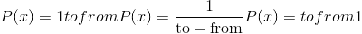

torch张量
torch.Tensor 是包含单个数据类型元素的多维矩阵。
Torch 定义了 9 种 CPU 张量类型和 9 种 GPU 张量类型：
| 数据类型 | dtype | CPU 张量 | GPU 张量 |
|---|---|---|---|
| 32 位浮点 | torch.float32或torch.float |
torch.FloatTensor |
torch.cuda.FloatTensor |
| 64 位浮点 | torch.float64或torch.double |
torch.DoubleTensor |
torch.cuda.DoubleTensor |
| 16 位浮点 | torch.float16或torch.half |
torch.HalfTensor |
torch.cuda.HalfTensor |
| 8 位整数(无符号） | torch.uint8 |
torch.ByteTensor |
torch.cuda.ByteTensor |
| 8 位整数(有符号） | torch.int8 |
torch.CharTensor |
torch.cuda.CharTensor |
| 16 位整数(有符号） | torch.int16或torch.short |
torch.ShortTensor |
torch.cuda.ShortTensor |
| 32 位整数(有符号） | torch.int32或torch.int |
torch.IntTensor |
torch.cuda.IntTensor |
| 64 位整数(有符号） | torch.int64或torch.long |
torch.LongTensor |
torch.cuda.LongTensor |
| 布尔型 | torch.bool |
torch.BoolTensor |
torch.cuda.BoolTensor |
torch.Tensor 是默认张量类型(torch.FloatTensor）的别名。
可以使用 torch.tensor() 构造函数从 Python list或序列构造张量：
>>> torch.tensor([[1., -1.], [1., -1.]])
tensor([[ 1.0000, -1.0000],
[ 1.0000, -1.0000]])
>>> torch.tensor(np.array([[1, 2, 3], [4, 5, 6]]))
tensor([[ 1, 2, 3],
[ 4, 5, 6]])
警告
torch.tensor() 始终复制data。 如果您具有张量data，而只想更改其requires_grad标志，请使用 requires_grad_() 或 detach() 以避免复制。 如果您有一个 numpy 数组并且想要避免复制，请使用 torch.as_tensor() 。
可以通过将 torch.dtype 和/或 torch.device 传递给构造函数或张量创建操作来构造特定数据类型的张量：
>>> torch.zeros([2, 4], dtype=torch.int32)
tensor([[ 0, 0, 0, 0],
[ 0, 0, 0, 0]], dtype=torch.int32)
>>> cuda0 = torch.device('cuda:0')
>>> torch.ones([2, 4], dtype=torch.float64, device=cuda0)
tensor([[ 1.0000, 1.0000, 1.0000, 1.0000],
[ 1.0000, 1.0000, 1.0000, 1.0000]], dtype=torch.float64, device='cuda:0')
张量的内容可以使用 Python 的索引和切片符号来访问和修改：
>>> x = torch.tensor([[1, 2, 3], [4, 5, 6]])
>>> print(x[1][2])
tensor(6)
>>> x[0][1] = 8
>>> print(x)
tensor([[ 1, 8, 3],
[ 4, 5, 6]])
使用 torch.Tensor.item() 从张量中获取包含单个值的 Python 数字：
>>> x = torch.tensor([[1]])
>>> x
tensor([[ 1]])
>>> x.item()
1
>>> x = torch.tensor(2.5)
>>> x
tensor(2.5000)
>>> x.item()
2.5
可以使用requires_grad=True创建一个张量，以便 torch.autograd 对其进行记录操作以进行自动微分。
>>> x = torch.tensor([[1., -1.], [1., 1.]], requires_grad=True)
>>> out = x.pow(2).sum()
>>> out.backward()
>>> x.grad
tensor([[ 2.0000, -2.0000],
[ 2.0000, 2.0000]])
每个张量都有一个关联的torch.Storage，它保存其数据。 张量类提供了存储的多维跨度视图，并定义了数字运算。
注意
有关 torch.Tensor 的 torch.dtype ， torch.device 和 torch.layout 属性的更多信息，请参阅[ Tensor Attributes 。
注意
改变张量的方法用下划线后缀标记。 例如，torch.FloatTensor.abs_()在原位计算绝对值并返回修改后的张量，而torch.FloatTensor.abs()在新张量中计算结果。
注意
要更改现有张量的 torch.device 和/或 torch.dtype ，请考虑在张量上使用 to() 方法。
警告
torch.Tensor 的当前实现引入了内存开销，因此，在具有许多微小张量的应用程序中，它可能导致意外的高内存使用率。 如果是这种情况，请考虑使用一种大型结构。
class torch.Tensor
根据您的用例，创建张量的主要方法有几种。
-
要使用现有数据创建张量，请使用
torch.tensor()。 -
要创建具有特定大小的张量，请使用
torch.*张量创建操作(请参见 Creation Ops)。 -
要创建与另一个张量具有相同大小(和相似类型）的张量，请使用
torch.*_like张量创建操作(请参见创建操作）。 -
要创建与其他张量具有相似类型但大小不同的张量，请使用
tensor.new_*创建操作。
new_tensor(data, dtype=None, device=None, requires_grad=False) → Tensor
返回以data作为张量数据的新张量。 默认情况下，返回的张量与此张量具有相同的 torch.dtype 和 torch.device 。
警告
new_tensor() 始终复制data。 如果您有张量data并希望避免复制，请使用 torch.Tensor.requires_grad_() 或 torch.Tensor.detach() 。 如果您有一个 numpy 数组并且想要避免复制，请使用 torch.from_numpy() 。
警告
当数据是张量 x 时， new_tensor() 从传递的任何数据中读出“数据”，并构造一个叶子变量。 因此，tensor.new_tensor(x)等同于x.clone().detach()，tensor.new_tensor(x, requires_grad=True)等同于x.clone().detach().requires_grad_(True)。 建议使用clone()和detach()的等效项。
参数
-
data (array_like )–返回的张量副本
data。 -
dtype (
torch.dtype，可选）– 返回张量的所需类型。 默认值：如果为 None，则与此张量相同的torch.dtype。 -
device (
torch.device，可选）– 返回张量的所需设备。 默认值：如果为 None，则与此张量相同的torch.device。 -
require_grad (bool ， 可选）– 返回的张量是否需要自动求导。 默认值：
False。
例：
>>> tensor = torch.ones((2,), dtype=torch.int8)
>>> data = [[0, 1], [2, 3]]
>>> tensor.new_tensor(data)
tensor([[ 0, 1],
[ 2, 3]], dtype=torch.int8)
new_full(size, fill_value, dtype=None, device=None, requires_grad=False) → Tensor
返回大小为 size 的张量，并用fill_value填充。 默认情况下，返回的张量与此张量具有相同的 torch.dtype 和 torch.device 。
参数
-
fill_value (标量）–用来填充输出张量的数字。
-
dtype (
torch.dtype, optional) – 返回张量的所需类型。 默认值：如果为 None，则与此张量相同的torch.dtype。 -
device (
torch.device, optional) – 返回张量的所需设备。 默认值：如果为 None，则与此张量相同的torch.device。 -
requires_grad (bool__, optional) – 返回的张量是否需要自动求导。 默认值：
False。
例:
>>> tensor = torch.ones((2,), dtype=torch.float64)
>>> tensor.new_full((3, 4), 3.141592)
tensor([[ 3.1416, 3.1416, 3.1416, 3.1416],
[ 3.1416, 3.1416, 3.1416, 3.1416],
[ 3.1416, 3.1416, 3.1416, 3.1416]], dtype=torch.float64)
new_empty(size, dtype=None, device=None, requires_grad=False) → Tensor
返回大小为 size 的张量，其中填充了未初始化的数据。 默认情况下，返回的张量具有与此张量相同的 torch.dtype 和 torch.device 。
参数
-
dtype (
torch.dtype, optional) – -
device (
torch.device, optional) – 返回张量的所需设备。 默认值：如果为 None，则与此张量相同的torch.device。 -
requires_grad (bool__, optional) – 返回的张量是否需要自动求导。 默认值：
False。
例:
>>> tensor = torch.ones(())
>>> tensor.new_empty((2, 3))
tensor([[ 5.8182e-18, 4.5765e-41, -1.0545e+30],
[ 3.0949e-41, 4.4842e-44, 0.0000e+00]])
new_ones(size, dtype=None, device=None, requires_grad=False) → Tensor
返回大小为 size 的张量，并用1填充。 默认情况下，返回的张量与此张量具有相同的 torch.dtype 和 torch.device 。
参数
-
大小 (python：int ... )–定义输出张量形状的整数列表，元组或
torch.Size。 -
dtype (
torch.dtype, optional) – 返回张量的所需类型。 默认: 如果是 None, 和torch.dtype一样 -
device (
torch.device, optional) – 返回张量所在的设备。 默认: 如果是 None, 和torch.device一样 -
requires_grad (bool__, optional) – 返回的张量是否需要自动求导。 默认值：
False。
例:
>>> tensor = torch.tensor((), dtype=torch.int32)
>>> tensor.new_ones((2, 3))
tensor([[ 1, 1, 1],
[ 1, 1, 1]], dtype=torch.int32)
new_zeros(size, dtype=None, device=None, requires_grad=False) → Tensor
返回大小为 size 的张量，并用0填充。 默认情况下，返回的张量与此张量具有相同的 torch.dtype 和 torch.device 。
参数
-
size (python:int...) – a list, tuple, or
torch.Sizeof integers defining the shape of the output tensor. -
dtype (
torch.dtype, optional) – 返回张量的所需类型。 默认值：如果为 None，则与此张量相同的torch.dtype。 -
device (
torch.device, optional) – 返回张量的所需设备。 默认值：如果为 None，则与此张量相同的torch.device。 -
requires_grad (bool__, optional) – 返回的张量是否需要自动求导。 默认值：
False。
例：
>>> tensor = torch.tensor((), dtype=torch.float64)
>>> tensor.new_zeros((2, 3))
tensor([[ 0., 0., 0.],
[ 0., 0., 0.]], dtype=torch.float64)
is_cuda
如果张量存储在 GPU 上，则为True，否则为False。
device
张量所在的 torch.device 。
grad
此属性默认为None，并在首次调用 backward() 计算self的梯度时成为张量。 然后，该属性将包含计算出的梯度以及 backward()返回的梯度值，然后进行梯度累加。
ndim
dim() 的别名
T
这个张量的尺寸是否颠倒了吗？
如果n是x中的尺寸数，则x.T等效于x.permute(n-1, n-2, ..., 0)。
abs() → Tensor
参见 torch.abs()
abs_() → Tensor
就地版本的 abs()
acos() → Tensor
参见 torch.acos()
acos_() → Tensor
就地版本的 acos()
add(value) → Tensor
add(value = 1，other）->张量
参见 torch.add()
add_(value) → Tensor
add_(value = 1，other）->张量
就地版本的 add()
addbmm(beta=1, alpha=1, batch1, batch2) → Tensor
addbmm_(beta=1, alpha=1, batch1, batch2) → Tensor
就地版本的 addbmm()
addcdiv(value=1, tensor1, tensor2) → Tensor
addcdiv_(value=1, tensor1, tensor2) → Tensor
就地版本的 addcdiv()
addcmul(value=1, tensor1, tensor2) → Tensor
addcmul_(value=1, tensor1, tensor2) → Tensor
就地版本的 addcmul()
addmm(beta=1, alpha=1, mat1, mat2) → Tensor
addmm_(beta=1, alpha=1, mat1, mat2) → Tensor
就地版本的 addmm()
addmv(beta=1, alpha=1, mat, vec) → Tensor
addmv_(beta=1, alpha=1, mat, vec) → Tensor
就地版本的 addmv()
addr(beta=1, alpha=1, vec1, vec2) → Tensor
参见 torch.addr()
addr_(beta=1, alpha=1, vec1, vec2) → Tensor
就地版本的 addr()
allclose(other, rtol=1e-05, atol=1e-08, equal_nan=False) → Tensor
angle() → Tensor
apply_(callable) → Tensor
将函数callable应用于张量中的每个元素，并用callable返回的值替换每个元素。
注意
此功能仅适用于 CPU 张量，不应在需要高性能的代码段中使用。
argmax(dim=None, keepdim=False) → LongTensor
argmin(dim=None, keepdim=False) → LongTensor
argsort(dim=-1, descending=False) → LongTensor
参见：func： <cite>torch.argsort</cite>
asin() → Tensor
参见 torch.asin()
asin_() → Tensor
就地版本的 asin()
as_strided(size, stride, storage_offset=0) → Tensor
atan() → Tensor
参见 torch.atan()
atan2(other) → Tensor
atan2_(other) → Tensor
就地版本的 atan2()
atan_() → Tensor
就地版本的 atan()
backward(gradient=None, retain_graph=None, create_graph=False)
计算当前张量的梯度 w.r.t. 图叶。
该图使用链式法则进行区分。 如果张量是非标量的(即其数据具有多个元素）并且需要梯度，则该函数还需要指定gradient。 它应该是匹配类型和位置的张量，其中包含微分函数 w.r.t 的梯度。 self。
此函数是叶子梯度累加-调用它之前可能需要将它们归零。
参数
-
gradient (tensor Tensor None）– 梯度 w.r.t. 张量。 如果它是张量，除非
create_graph为 True，否则它将自动转换为不需要 grad 的张量。 无法为标量张量或不需要等级的张量指定任何值。 如果 None 值可以接受，那么此参数是可选的。 -
retian_graph (bool ， 可选）– 如果
False，则用于计算等级的图形将被释放。 请注意，几乎在所有情况下都不需要将此选项设置为 True，并且通常可以以更有效的方式解决它。 默认为create_graph的值。 -
create_graph (bool ， 可选）– 如果
True，则将构造导数图，从而允许计算高阶导数产品。 默认为False。
baddbmm(beta=1, alpha=1, batch1, batch2) → Tensor
baddbmm_(beta=1, alpha=1, batch1, batch2) → Tensor
就地版本的 baddbmm()
bernoulli(*, generator=None) → Tensor
返回结果张量，其中每个\(result[i]\)从\(Bernoulli(self[i])\)中独立采样。 self必须具有浮点dtype，结果将具有相同的dtype。
bernoulli_(p=0.5, *, generator=None) → Tensor
用\(Bernoulli(p)\)的独立样本填充self的每个位置。 self可以具有整数dtype。
bfloat16() → Tensor
self.bfloat16()等效于self.to(torch.bfloat16)。 参见 to() 。
bincount(weights=None, minlength=0) → Tensor
bitwise_not() → Tensor
bitwise_not_() → Tensor
就地版本的 bitwise_not()
bitwise_xor() → Tensor
bitwise_xor_() → Tensor
就地版本的 bitwise_xor()
bmm(batch2) → Tensor
参见 torch.bmm()
bool() → Tensor
self.bool()等效于self.to(torch.bool)。 参见 to() 。
byte() → Tensor
self.byte()等效于self.to(torch.uint8)。 参见 to() 。
cauchy_(median=0, sigma=1, *, generator=None) → Tensor
用从柯西分布中得出的数字填充张量：
ceil() → Tensor
参见 torch.ceil()
ceil_() → Tensor
就地版本的 ceil()
char() → Tensor
self.char()等效于self.to(torch.int8)。 参见 to() 。
cholesky(upper=False) → Tensor
cholesky_inverse(upper=False) → Tensor
cholesky_solve(input2, upper=False) → Tensor
chunk(chunks, dim=0) → List of Tensors
clamp(min, max) → Tensor
clamp_(min, max) → Tensor
就地版本的 clamp()
clone() → Tensor
返回self张量的副本。 该副本的大小和数据类型与self相同。
注意
与 _copy__()不同，此功能记录在计算图中。 传播到克隆张量的渐变将传播到原始张量。
contiguous() → Tensor
返回包含与self张量相同的数据的连续张量。 如果self张量是连续的，则此函数返回self张量。
copy_(src, non_blocking=False) → Tensor
将元素从src复制到self张量并返回self。
src张量必须与self张量一起广播。 它可以具有不同的数据类型，也可以位于不同的设备上。
参数
-
src (tensor)–要从中复制的源张量
-
non_blocking (bool )–如果
True并且此副本位于 CPU 和 GPU 之间，则该副本可能相对于主机异步发生。 在其他情况下，此参数无效。
conj() → Tensor
参见 torch.conj()
cos() → Tensor
参见 torch.cos()
cos_() → Tensor
就地版本的 cos()
cosh() → Tensor
参见 torch.cosh()
cosh_() → Tensor
就地版本的 cosh()
cpu() → Tensor
返回此对象在 CPU 内存中的副本。
如果该对象已经在 CPU 内存中并且在正确的设备上，则不执行任何复制操作并返回原始对象。
cross(other, dim=-1) → Tensor
cuda(device=None, non_blocking=False) → Tensor
返回此对象在 CUDA 内存中的副本。
如果此对象已经在 CUDA 内存中并且在正确的设备上，则不执行任何复制，并返回原始对象。
参数
-
device (
torch.device) – 目标 GPU 设备。 默认为当前 CUDA 设备。 -
non_blocking (bool ) – 如果
True并且源位于固定内存中，则副本将相对于主机是异步的。 否则，该参数无效。 默认值：False。
cumprod(dim, dtype=None) → Tensor
cumsum(dim, dtype=None) → Tensor
data_ptr() → int
返回self张量的第一个元素的地址。
dequantize() → Tensor
给定量化的张量，对其进行反量化，然后返回反量化后的浮点张量。
det() → Tensor
参见 torch.det()
dense_dim() → int
如果self是稀疏的 COO 张量(即torch.sparse_coo布局），则返回密集尺寸的数量。 否则，将引发错误。
另请参见 Tensor.sparse_dim() 。
detach()
返回与当前图形分离的新 Tensor。
结果将永远不需要梯度。
注意
返回的 Tensor 与原始 Tensor 共享相同的存储。 可以看到对它们中的任何一个的就地修改，并且可能触发正确性检查中的错误。 重要说明：以前，就地大小/步幅/存储更改(例如 _resize__/_resize_as__/_set__/_transpose__) 返回的张量也会更新原始张量。 现在，这些就地更改将不再更新原始张量，而将触发错误。 对于稀疏张量：原位索引 / 值更改(例如 _zero__/_copy__/_add__)将不会再更新原始张量， 而是触发错误。
detach_()
从创建它的图形中分离张量，使其成为一片叶子。 视图不能就地分离。
diag(diagonal=0) → Tensor
参见 torch.diag()
diag_embed(offset=0, dim1=-2, dim2=-1) → Tensor
diagflat(offset=0) → Tensor
diagonal(offset=0, dim1=0, dim2=1) → Tensor
fill_diagonal_(fill_value, wrap=False) → Tensor
填充具有至少 2 维的张量的主对角线。 当> 2 变暗时，所有输入尺寸必须相等。 此函数就地修改输入张量，并返回输入张量。
参数
-
fill_value (标量）– 填充值
-
wrap (bool ) – 对角线“包裹”在高列的 N 列之后。
例:
>>> a = torch.zeros(3, 3)
>>> a.fill_diagonal_(5)
tensor([[5., 0., 0.],
[0., 5., 0.],
[0., 0., 5.]])
>>> b = torch.zeros(7, 3)
>>> b.fill_diagonal_(5)
tensor([[5., 0., 0.],
[0., 5., 0.],
[0., 0., 5.],
[0., 0., 0.],
[0., 0., 0.],
[0., 0., 0.],
[0., 0., 0.]])
>>> c = torch.zeros(7, 3)
>>> c.fill_diagonal_(5, wrap=True)
tensor([[5., 0., 0.],
[0., 5., 0.],
[0., 0., 5.],
[0., 0., 0.],
[5., 0., 0.],
[0., 5., 0.],
[0., 0., 5.]])
digamma() → Tensor
digamma_() → Tensor
就地版本的 digamma()
dim() → int
返回self张量的维数。
dist(other, p=2) → Tensor
参见 torch.dist()
div(value) → Tensor
参见 torch.div()
div_(value) → Tensor
就地版本的 div()
dot(tensor2) → Tensor
参见 torch.dot()
double() → Tensor
self.double()等效于self.to(torch.float64)。 参见 to() 。
eig(eigenvectors=False) -> (Tensor, Tensor)
参见 torch.eig()
element_size() → int
返回单个元素的大小(以字节为单位）。
例:
>>> torch.tensor([]).element_size()
4
>>> torch.tensor([], dtype=torch.uint8).element_size()
1
eq(other) → Tensor
参见 torch.eq()
eq_(other) → Tensor
就地版本的 eq()
equal(other) → bool
erf() → Tensor
参见 torch.erf()
erf_() → Tensor
就地版本的 erf()
erfc() → Tensor
参见 torch.erfc()
erfc_() → Tensor
就地版本的 erfc()
erfinv() → Tensor
erfinv_() → Tensor
就地版本的 erfinv()
exp() → Tensor
参见 torch.exp()
exp_() → Tensor
就地版本的 exp()
expm1() → Tensor
expm1_() → Tensor
就地版本的 expm1()
expand(*sizes) → Tensor
返回self张量的新视图，其中单例尺寸扩展为更大的尺寸。
将-1 传递为尺寸的大小表示不更改该尺寸的大小。
Tensor 也可以扩展到更大的尺寸，并且新尺寸将附加在前面。 对于新尺寸，尺寸不能设置为-1。
扩展张量不会分配新的内存，而只会在现有张量上创建一个新视图，其中通过将stride设置为 0，将尺寸为 1 的维扩展为更大的尺寸。尺寸为 1 的任何维都可以扩展为 不分配新内存的任意值。
参数
*大小(torch大小 或 python：int ... )–所需的扩展大小
警告
扩展张量的一个以上元素可以引用单个存储位置。 结果，就地操作(尤其是矢量化的操作）可能会导致错误的行为。 如果需要写张量，请先克隆它们。
例:
>>> x = torch.tensor([[1], [2], [3]])
>>> x.size()
torch.Size([3, 1])
>>> x.expand(3, 4)
tensor([[ 1, 1, 1, 1],
[ 2, 2, 2, 2],
[ 3, 3, 3, 3]])
>>> x.expand(-1, 4) # -1 means not changing the size of that dimension
tensor([[ 1, 1, 1, 1],
[ 2, 2, 2, 2],
[ 3, 3, 3, 3]])
expand_as(other) → Tensor
将该张量扩展为与other相同的大小。 self.expand_as(other)等效于self.expand(other.size())。
有关expand的更多信息，请参见 expand() 。
参数
其他 (torch.Tensor)–结果张量的大小与other相同。
exponential_(lambd=1, *, generator=None) → Tensor
用从指数分布中绘制的元素填充self张量：
fft(signal_ndim, normalized=False) → Tensor
参见 torch.fft()
fill_(value) → Tensor
用指定值填充self张量。
flatten(input, start_dim=0, end_dim=-1) → Tensor
flip(dims) → Tensor
参见 torch.flip()
float() → Tensor
self.float()等效于self.to(torch.float32)。 参见 to() 。
floor() → Tensor
floor_() → Tensor
就地版本的 floor()
fmod(divisor) → Tensor
参见 torch.fmod()
fmod_(divisor) → Tensor
就地版本的 fmod()
frac() → Tensor
参见 torch.frac()
frac_() → Tensor
就地版本的 frac()
gather(dim, index) → Tensor
ge(other) → Tensor
参见 torch.ge()
ge_(other) → Tensor
就地版本的 ge()
geometric_(p, *, generator=None) → Tensor
用从几何分布中绘制的元素填充self张量：
geqrf() -> (Tensor, Tensor)
ger(vec2) → Tensor
参见 torch.ger()
get_device() -> Device ordinal (Integer)
对于 CUDA 张量，此函数返回张量所在的 GPU 的设备序号。 对于 CPU 张量，将引发错误。
例：
>>> x = torch.randn(3, 4, 5, device='cuda:0')
>>> x.get_device()
0
>>> x.cpu().get_device() # RuntimeError: get_device is not implemented for type torch.FloatTensor
gt(other) → Tensor
参见 torch.gt()
gt_(other) → Tensor
就地版本的 gt()
half() → Tensor
self.half()等效于self.to(torch.float16)。 参见 to() 。
hardshrink(lambd=0.5) → Tensor
参见 torch.nn.functional.hardshrink()
histc(bins=100, min=0, max=0) → Tensor
ifft(signal_ndim, normalized=False) → Tensor
参见 torch.ifft()
imag() → Tensor
参见 torch.imag()
index_add_(dim, index, tensor) → Tensor
通过按index中给定的顺序添加索引，将 tensor 的元素累积到self张量中。 例如，如果dim == 0和index[i] == j，则将的第i行tensor 添加到self的第j行。
tensor 的 dim 尺寸必须与index的长度(必须为矢量）的尺寸相同，并且所有其他尺寸必须与self ]，否则将引发错误。
注意
使用 CUDA 后端时，此操作可能会导致不确定的行为，不容易关闭。 有关背景，请参见重现性的注释。
参数
例：
>>> x = torch.ones(5, 3)
>>> t = torch.tensor([[1, 2, 3], [4, 5, 6], [7, 8, 9]], dtype=torch.float)
>>> index = torch.tensor([0, 4, 2])
>>> x.index_add_(0, index, t)
tensor([[ 2., 3., 4.],
[ 1., 1., 1.],
[ 8., 9., 10.],
[ 1., 1., 1.],
[ 5., 6., 7.]])
index_add(dim, index, tensor) → Tensor
torch.Tensor.index_add_() 的替代版本
index_copy_(dim, index, tensor) → Tensor
通过按index中给定的顺序选择索引，将 tensor 的元素复制到self张量中。 例如，如果dim == 0和index[i] == j，则将 tensor 的第i行复制到self的第j行。
The dimth dimension of tensor must have the same size as the length of index (which must be a vector), and all other dimensions must match self, or an error will be raised.
参数
-
dim (python:int) – dimension along which to index
-
index (LongTensor) – indices of
tensorto select from -
张量 (tensor)–张量包含要复制的值
例：
>>> x = torch.zeros(5, 3)
>>> t = torch.tensor([[1, 2, 3], [4, 5, 6], [7, 8, 9]], dtype=torch.float)
>>> index = torch.tensor([0, 4, 2])
>>> x.index_copy_(0, index, t)
tensor([[ 1., 2., 3.],
[ 0., 0., 0.],
[ 7., 8., 9.],
[ 0., 0., 0.],
[ 4., 5., 6.]])
index_copy(dim, index, tensor) → Tensor
torch.Tensor.index_copy_() 的替代版本
index_fill_(dim, index, val) → Tensor
通过按index中给定的顺序选择索引，用值val填充self张量的元素。
参数
-
dim (python:int) – dimension along which to index
-
索引 (LongTensor )–填写的
self张量索引 -
val (python：float )–要填充的值
例：:
>>> x = torch.tensor([[1, 2, 3], [4, 5, 6], [7, 8, 9]], dtype=torch.float)
>>> index = torch.tensor([0, 2])
>>> x.index_fill_(1, index, -1)
tensor([[-1., 2., -1.],
[-1., 5., -1.],
[-1., 8., -1.]])
index_fill(dim, index, value) → Tensor
torch.Tensor.index_fill_() 的替代版本
index_put_(indices, value, accumulate=False) → Tensor
使用在 indices 中指定的索引(张量的元组）将张量value的值放入张量self。 表达式tensor.index_put_(indices, value)等效于tensor[indices] = value。 返回self。
如果accumulate为True，则将 tensor 中的元素添加到self中。 如果 accumulate 为False，则在索引包含重复元素的情况下行为未定义。
参数
-
索引(LongTensor 的_元组）–用于索引<cite>自身</cite>的张量。_
-
值 (tensor)–与<cite>自身</cite>相同类型的张量。
-
累积 (bool )–是否累积
index_put(indices, value, accumulate=False) → Tensor
index_put_() 的替代版本
index_select(dim, index) → Tensor
indices() → Tensor
如果self是稀疏的 COO 张量(即torch.sparse_coo布局），则返回包含的索引张量的视图。 否则，将引发错误。
另请参见 Tensor.values() 。
注意
只能在合并的稀疏张量上调用此方法。 有关详细信息，请参见Tensor.coalesce()。
int() → Tensor
self.int()等效于self.to(torch.int32)。 参见 to() 。
int_repr() → Tensor
给定量化的 Tensor，self.int_repr()返回以 uint8_t 作为数据类型的 CPU Tensor，该数据类型存储给定 Tensor 的基础 uint8_t 值。
inverse() → Tensor
irfft(signal_ndim, normalized=False, onesided=True, signal_sizes=None) → Tensor
is_contiguous() → bool
如果self张量在内存中以 C 顺序连续，则返回 True。
is_floating_point() → bool
如果self的数据类型是浮点数据类型，则返回 True。
is_leaf
按照惯例，所有具有 requires_grad 即False的张量将是叶张量。
对于具有 requires_grad (即True）的张量，如果它们是由用户创建的，则它们将是叶张量。 这意味着它们不是运算的结果，因此grad_fn为“无”。
在调用 backward() 期间，仅叶子张量会填充其 grad 。 要为非叶张量填充 grad ，可以使用 retain_grad() 。
例：
>>> a = torch.rand(10, requires_grad=True)
>>> a.is_leaf
True
>>> b = torch.rand(10, requires_grad=True).cuda()
>>> b.is_leaf
False
# b was created by the operation that cast a cpu Tensor into a cuda Tensor
>>> c = torch.rand(10, requires_grad=True) + 2
>>> c.is_leaf
False
# c was created by the addition operation
>>> d = torch.rand(10).cuda()
>>> d.is_leaf
True
# d does not require gradients and so has no operation creating it (that is tracked by the autograd engine)
>>> e = torch.rand(10).cuda().requires_grad_()
>>> e.is_leaf
True
# e requires gradients and has no operations creating it
>>> f = torch.rand(10, requires_grad=True, device="cuda")
>>> f.is_leaf
True
# f requires grad, has no operation creating it
is_pinned()
如果该张量驻留在固定的内存中，则返回 true。
is_set_to(tensor) → bool
如果此对象引用与 Torch C API 中相同的THTensor对象作为给定张量，则返回 True。
is_shared()
检查张量是否在共享内存中。
CUDA 张量始终为True。
is_signed() → bool
如果self的数据类型是带符号的数据类型，则返回 True。
is_sparse
item() → number
返回此张量的值作为标准 Python 数。 这仅适用于具有一个元素的张量。 对于其他情况，请参见 tolist() 。
此操作不可区分。
例：
>>> x = torch.tensor([1.0])
>>> x.item()
1.0
kthvalue(k, dim=None, keepdim=False) -> (Tensor, LongTensor)
le(other) → Tensor
参见 torch.le()
le_(other) → Tensor
就地版本的 le()
lerp(end, weight) → Tensor
参见 torch.lerp()
lerp_(end, weight) → Tensor
就地版本的 lerp()
lgamma() → Tensor
lgamma_() → Tensor
就地版本的 lgamma()
log() → Tensor
参见 torch.log()
log_() → Tensor
就地版本的 log()
logdet() → Tensor
log10() → Tensor
log10_() → Tensor
就地版本的 log10()
log1p() → Tensor
log1p_() → Tensor
就地版本的 log1p()
log2() → Tensor
参见 torch.log2()
log2_() → Tensor
就地版本的 log2()
log_normal_(mean=1, std=2, *, generator=None)
用对数正态分布中由给定平均值 和标准偏差
和标准偏差 参数化的数字样本填充
参数化的数字样本填充self张量。 请注意， mean 和 std 是基础正态分布的均值和标准偏差，而不是返回的正态分布：
logsumexp(dim, keepdim=False) → Tensor
logical_not() → Tensor
logical_not_() → Tensor
就地版本的 logical_not()
logical_xor() → Tensor
logical_xor_() → Tensor
就地版本的 logical_xor()
long() → Tensor
self.long()等效于self.to(torch.int64)。 参见 to() 。
lstsq(A) -> (Tensor, Tensor)
lt(other) → Tensor
参见 torch.lt()
lt_(other) → Tensor
就地版本的 lt()
lu(pivot=True, get_infos=False)
参见 torch.lu()
lu_solve(LU_data, LU_pivots) → Tensor
map_(tensor, callable)
对self张量中的每个元素和给定的 tensor 应用callable，并将结果存储在self张量中。 self张量和给定的 tensor 必须是可广播的。
callable应具有签名：
def callable(a, b) -> number
masked_scatter_(mask, source)
在mask为 True 的位置将元素从source复制到self张量。 mask的形状必须是可广播的，并具有基础张量的形状。 source中的元素数量至少应与mask中的元素数量一样多。
参数
-
掩码 (BoolTensor)–布尔掩码
-
源 (tensor)–要从中复制的张量
注意
mask在self张量上运行，而不是在给定的source张量上运行。
masked_scatter(mask, tensor) → Tensor
torch.Tensor.masked_scatter_() 的替代版本
masked_fill_(mask, value)
用value填充self张量的元素，其中mask为 True。 mask的形状必须是可广播的，并具有基础张量的形状。
参数
-
mask (BoolTensor) – the boolean mask
-
值 (python：float )–要填写的值
masked_fill(mask, value) → Tensor
torch.Tensor.masked_fill_() 的替代版本
masked_select(mask) → Tensor
matmul(tensor2) → Tensor
matrix_power(n) → Tensor
max(dim=None, keepdim=False) -> Tensor or (Tensor, Tensor)
参见 torch.max()
mean(dim=None, keepdim=False) -> Tensor or (Tensor, Tensor)
参见 torch.mean()
median(dim=None, keepdim=False) -> (Tensor, LongTensor)
min(dim=None, keepdim=False) -> Tensor or (Tensor, Tensor)
参见 torch.min()
mm(mat2) → Tensor
参见 torch.mm()
mode(dim=None, keepdim=False) -> (Tensor, LongTensor)
参见 torch.mode()
mul(value) → Tensor
参见 torch.mul()
mul_(value)
就地版本的 mul()
multinomial(num_samples, replacement=False, *, generator=None) → Tensor
mv(vec) → Tensor
参见 torch.mv()
mvlgamma(p) → Tensor
mvlgamma_(p) → Tensor
就地版本的 mvlgamma()
narrow(dimension, start, length) → Tensor
例：
>>> x = torch.tensor([[1, 2, 3], [4, 5, 6], [7, 8, 9]])
>>> x.narrow(0, 0, 2)
tensor([[ 1, 2, 3],
[ 4, 5, 6]])
>>> x.narrow(1, 1, 2)
tensor([[ 2, 3],
[ 5, 6],
[ 8, 9]])
narrow_copy(dimension, start, length) → Tensor
与 Tensor.narrow() 相同，只是返回副本而不是共享存储。 这主要用于稀疏张量，它们没有共享存储的窄方法。 用dimemsion > self.sparse_dim()调用narrow_copy`将返回缩小了相关密集尺寸的副本，并相应地更新了self.shape``。
ndimension() → int
Alias for dim()
ne(other) → Tensor
参见 torch.ne()
ne_(other) → Tensor
就地版本的 ne()
neg() → Tensor
参见 torch.neg()
neg_() → Tensor
就地版本的 neg()
nelement() → int
numel() 的别名
nonzero() → LongTensor
norm(p='fro', dim=None, keepdim=False, dtype=None)
参见 torch.norm()
normal_(mean=0, std=1, *, generator=None) → Tensor
用由 mean 和 std 参数化的正态分布的元素样本填充self张量。
numel() → int
numpy() → numpy.ndarray
以 NumPy ndarray的形式返回self张量。 该张量和返回的ndarray共享相同的基础存储。 对self张量的更改将反映在ndarray中，反之亦然。
orgqr(input2) → Tensor
ormqr(input2, input3, left=True, transpose=False) → Tensor
permute(*dims) → Tensor
置换此张量的尺寸。
参数
*dims (python：int ... ) – 所需的维度顺序
例:
>>> x = torch.randn(2, 3, 5)
>>> x.size()
torch.Size([2, 3, 5])
>>> x.permute(2, 0, 1).size()
torch.Size([5, 2, 3])
pin_memory() → Tensor
将张量复制到固定的内存(如果尚未固定）。
pinverse() → Tensor
polygamma(n) → Tensor
polygamma_(n) → Tensor
就地版本的 polygamma()
pow(exponent) → Tensor
参见 torch.pow()
pow_(exponent) → Tensor
就地版本的 pow()
prod(dim=None, keepdim=False, dtype=None) → Tensor
参见 torch.prod()
put_(indices, tensor, accumulate=False) → Tensor
将 tensor 中的元素复制到索引指定的位置。 为了建立索引，将self张量视为一维张量。
If accumulate is True, the elements in tensor are added to self. If accumulate is False, the behavior is undefined if indices contain duplicate elements.
参数
-
索引 (LongTensor )–自身索引
-
张量 (tensor)–张量包含要复制的值
-
accumulate (bool) – whether to accumulate into self
例：
>>> src = torch.tensor([[4, 3, 5],
[6, 7, 8]])
>>> src.put_(torch.tensor([1, 3]), torch.tensor([9, 10]))
tensor([[ 4, 9, 5],
[ 10, 7, 8]])
qr(some=True) -> (Tensor, Tensor)
参见 torch.qr()
qscheme() → torch.qscheme
返回给定 QTensor 的量化方案。
q_scale() → float
给定一个通过线性(仿射）量化量化的张量，返回基础量化器(）的比例尺。
q_zero_point() → int
给定一个通过线性(仿射）量化量化的张量，返回基础量化器(）的 zero_point。
q_per_channel_scales() → Tensor
给定通过线性(仿射）每通道量化进行量化的张量，返回基础量化器的比例的张量。 它具有与张量的相应尺寸(来自 q_per_channel_axis）匹配的元素数量。
q_per_channel_zero_points() → Tensor
给定一个通过线性(仿射）每通道量化量化的张量，返回基础量化器的 zero_points 张量。 它具有与张量的相应尺寸(来自 q_per_channel_axis）匹配的元素数量。
q_per_channel_axis() → int
给定通过线性(仿射）每通道量化量化的张量，返回在其上应用每通道量化的尺寸索引。
random_(from=0, to=None, *, generator=None) → Tensor
用从[from, to - 1]上的离散均匀分布采样的数字填充self张量。 如果未指定，则这些值通常仅受self张量的数据类型限制。 但是，对于浮点类型，如果未指定，范围将为[0, 2^mantissa]以确保每个值都是可表示的。 例如， <cite>torch.tensor(1，dtype = torch.double）.random_(）</cite>在[0, 2^53]中将是统一的。
reciprocal() → Tensor
reciprocal_() → Tensor
就地版本的 reciprocal()
record_stream(stream)
确保在stream上排队的所有当前工作完成之前，张量存储器不会被其他张量重用。
注意
缓存分配器仅知道分配张量的流。 由于有了这种认识，它已经可以仅在一个流上正确管理张量的生命周期。 但是，如果在与原始流不同的流上使用张量，则分配器可能会意外地重用内存。 调用此方法可让分配器知道哪些流使用了张量。
register_hook(hook)
注册一个倒钩。
每当计算相对于张量的梯度时，都会调用该挂钩。 挂钩应具有以下签名：
hook(grad) -> Tensor or None
挂钩不应修改其自变量，但可以选择返回一个新的渐变，该渐变将代替 grad 使用。
此函数返回带有方法handle.remove()的句柄，该方法可将钩子从模块中移除。
例：
>>> v = torch.tensor([0., 0., 0.], requires_grad=True)
>>> h = v.register_hook(lambda grad: grad * 2) # double the gradient
>>> v.backward(torch.tensor([1., 2., 3.]))
>>> v.grad
2
4
6
[torch.FloatTensor of size (3,)]
>>> h.remove() # removes the hook
remainder(divisor) → Tensor
remainder_(divisor) → Tensor
就地版本的 remainder()
real() → Tensor
参见 torch.real()
renorm(p, dim, maxnorm) → Tensor
renorm_(p, dim, maxnorm) → Tensor
就地版本的 renorm()
repeat(*sizes) → Tensor
沿指定尺寸重复此张量。
与 expand() 不同，此功能复制张量的数据。
警告
torch.repeat()的行为与 numpy.repeat 不同，但更类似于 numpy.tile 。 对于类似于 <cite>numpy.repeat</cite> 的运算符，请参见 torch.repeat_interleave() 。
参数
大小(torch大小 或 python：int ... )–在每个维度上重复此张量的次数
例：
>>> x = torch.tensor([1, 2, 3])
>>> x.repeat(4, 2)
tensor([[ 1, 2, 3, 1, 2, 3],
[ 1, 2, 3, 1, 2, 3],
[ 1, 2, 3, 1, 2, 3],
[ 1, 2, 3, 1, 2, 3]])
>>> x.repeat(4, 2, 1).size()
torch.Size([4, 2, 3])
repeat_interleave(repeats, dim=None) → Tensor
参见 torch.repeat_interleave() 。
requires_grad
如果需要为此张量计算梯度，则为True，否则为False。
注意
需要为张量计算梯度的事实并不意味着将填充 grad 属性，有关更多详细信息，请参见 is_leaf 。
requires_grad_(requires_grad=True) → Tensor
更改 autograd 是否应记录该张量上的操作：适当地设置此张量的 requires_grad 属性。 返回此张量。
requires_grad_() 的主要用例是告诉 autograd 在 Tensor tensor上开始记录操作。 如果tensor具有requires_grad=False(因为它是通过 DataLoader 获得的，或者需要进行预处理或初始化），则tensor.requires_grad_()将其设置为使 autograd 将开始在tensor上记录操作。
参数
require_grad (bool )–如果 autograd 应该在该张量上记录操作。 默认值：True。
例：
>>> # Let's say we want to preprocess some saved weights and use
>>> # the result as new weights.
>>> saved_weights = [0.1, 0.2, 0.3, 0.25]
>>> loaded_weights = torch.tensor(saved_weights)
>>> weights = preprocess(loaded_weights) # some function
>>> weights
tensor([-0.5503, 0.4926, -2.1158, -0.8303])
>>> # Now, start to record operations done to weights
>>> weights.requires_grad_()
>>> out = weights.pow(2).sum()
>>> out.backward()
>>> weights.grad
tensor([-1.1007, 0.9853, -4.2316, -1.6606])
reshape(*shape) → Tensor
返回具有与self相同的数据和元素数量但具有指定形状的张量。 如果shape与当前形状兼容，则此方法返回一个视图。 当可以返回视图时，请参见 torch.Tensor.view() 。
参数
形状 (python：ints 的元组 或 python：int ... )–所需的形状
reshape_as(other) → Tensor
以与other相同的形状返回此张量。 self.reshape_as(other)等效于self.reshape(other.sizes())。 如果other.sizes()与当前形状兼容，则此方法返回视图。 何时可以返回视图，请参见 torch.Tensor.view() 。
有关reshape的更多信息，请参见 reshape() 。
参数
其他 (torch.Tensor)–结果张量具有与other相同的形状。
resize_(*sizes) → Tensor
将self张量调整为指定大小。 如果元素数量大于当前存储大小，那么将调整基础存储的大小以适合新的元素数量。 如果元素数较小，则基础存储不会更改。 现有元素将保留，但任何新内存均未初始化。
警告
这是一种底层方法。 将存储重新解释为 C 连续的，而忽略当前步幅(除非目标大小等于当前大小，在这种情况下，张量保持不变）。 对于大多数目的，您将改为使用 view() (检查连续性），或使用 reshape() (如果需要，可复制数据）。 要使用自定义步幅就地更改大小，请参见 set_() 。
参数
大小(torch大小 或 python：int ... )–所需大小
例：
>>> x = torch.tensor([[1, 2], [3, 4], [5, 6]])
>>> x.resize_(2, 2)
tensor([[ 1, 2],
[ 3, 4]])
resize_as_(tensor) → Tensor
将self张量调整为与指定的 tensor 相同的大小。 这等效于self.resize_(tensor.size())。
retain_grad()
为非叶张量启用.grad 属性。
rfft(signal_ndim, normalized=False, onesided=True) → Tensor
参见 torch.rfft()
roll(shifts, dims) → Tensor
参见 torch.roll()
rot90(k, dims) → Tensor
round() → Tensor
round_() → Tensor
就地版本的 round()
rsqrt() → Tensor
rsqrt_() → Tensor
就地版本的 rsqrt()
scatter(dim, index, source) → Tensor
torch.Tensor.scatter_() 的替代版本
scatter_(dim, index, src) → Tensor
将张量src中的所有值写入index张量中指定的索引处的self中。 对于src中的每个值，其输出索引由dimension != dim的src中的索引以及dimension = dim的index中的相应值指定。
对于 3-D 张量，self更新为：
self[index[i][j][k]][j][k] = src[i][j][k] # if dim == 0
self[i][index[i][j][k]][k] = src[i][j][k] # if dim == 1
self[i][j][index[i][j][k]] = src[i][j][k] # if dim == 2
这是 gather() 中描述的方式的相反操作。
self，index和src(如果是张量）应具有相同数量的尺寸。 还要求对于所有尺寸d均为index.size(d) <= src.size(d)，并且对于所有尺寸d != dim均要求index.size(d) <= self.size(d)。
此外，对于 gather() ，index的值必须介于0和self.size(dim) - 1之间，且沿指定尺寸 dim 必须是唯一的。
参数
-
dim (python：int ) – 沿其索引的轴
-
index (LongTensor ) – 要散布的元素的索引可以为空或 src 的大小相同。 如果为空，则操作返回标识
-
src (tensor) – 要散布的源元素，如果未指定_值_
-
value (python：float ) – 要分散的源元素，如果未指定_src_
例：
>>> x = torch.rand(2, 5)
>>> x
tensor([[ 0.3992, 0.2908, 0.9044, 0.4850, 0.6004],
[ 0.5735, 0.9006, 0.6797, 0.4152, 0.1732]])
>>> torch.zeros(3, 5).scatter_(0, torch.tensor([[0, 1, 2, 0, 0], [2, 0, 0, 1, 2]]), x)
tensor([[ 0.3992, 0.9006, 0.6797, 0.4850, 0.6004],
[ 0.0000, 0.2908, 0.0000, 0.4152, 0.0000],
[ 0.5735, 0.0000, 0.9044, 0.0000, 0.1732]])
>>> z = torch.zeros(2, 4).scatter_(1, torch.tensor([[2], [3]]), 1.23)
>>> z
tensor([[ 0.0000, 0.0000, 1.2300, 0.0000],
[ 0.0000, 0.0000, 0.0000, 1.2300]])
scatter_add_(dim, index, other) → Tensor
将张量other中的所有值添加到index张量中指定的索引处的self中，其方式与 scatter_() 相似。 对于other中的每个值，将其添加到self中的索引，该索引由dimension != dim中的other中的索引和dimension = dim中的index中的对应值指定。
For a 3-D tensor, self is updated as:
self[index[i][j][k]][j][k] += other[i][j][k] # if dim == 0
self[i][index[i][j][k]][k] += other[i][j][k] # if dim == 1
self[i][j][index[i][j][k]] += other[i][j][k] # if dim == 2
self，index和other应具有相同的尺寸数。 还要求对于所有尺寸d均为index.size(d) <= other.size(d)，并且对于所有尺寸d != dim均要求index.size(d) <= self.size(d)。
注意
When using the CUDA backend, this operation may induce nondeterministic behaviour that is not easily switched off. Please see the 注意s on Reproducibility for background.
参数
-
dim (python:int) – the axis along which to index
-
index (LongTensor ) – 分散和添加元素的索引，可以为空或 src 大小相同。 为空时，该操作将返回标识。
-
other (tensor) – 分散和添加的源元素
例：
>>> x = torch.rand(2, 5)
>>> x
tensor([[0.7404, 0.0427, 0.6480, 0.3806, 0.8328],
[0.7953, 0.2009, 0.9154, 0.6782, 0.9620]])
>>> torch.ones(3, 5).scatter_add_(0, torch.tensor([[0, 1, 2, 0, 0], [2, 0, 0, 1, 2]]), x)
tensor([[1.7404, 1.2009, 1.9154, 1.3806, 1.8328],
[1.0000, 1.0427, 1.0000, 1.6782, 1.0000],
[1.7953, 1.0000, 1.6480, 1.0000, 1.9620]])
scatter_add(dim, index, source) → Tensor
torch.Tensor.scatter_add_() 的替代版本
select(dim, index) → Tensor
沿选定维度在给定索引处切片self张量。 该函数返回一个张量，其中给定尺寸被移除。
参数
-
dim (python：int )–切片的尺寸
-
索引 (python：int )–要选择的索引
注意
select() 相当于切片。 例如，tensor.select(0, index)等效于tensor[index]，tensor.select(2, index)等效于tensor[:,:,index]。
set_(source=None, storage_offset=0, size=None, stride=None) → Tensor
设置基础存储空间，大小和跨度。 如果source是张量，则self张量将与source共享相同的存储空间并具有相同的大小和跨度。 一个张量中元素的变化将反映在另一个张量中。
如果source是Storage，则该方法设置基础存储，偏移，大小和跨度。
参数
-
源 (tensor 或 存储器）–使用的张量或存储器
-
storage_offset (python：int ， 可选）–存储中的偏移量
-
大小(torch大小 ， 可选）–所需大小。 默认为源大小。
-
步幅(元组 ， 可选）–所需的步幅。 默认为 C 连续跨步。
share_memory_()
将基础存储移动到共享内存。
如果基础存储已经在共享内存中并且用于 CUDA 张量，则此操作不可操作。 共享内存中的张量无法调整大小。
short() → Tensor
self.short()等效于self.to(torch.int16)。 参见 to() 。
sigmoid() → Tensor
sigmoid_() → Tensor
就地版本的 sigmoid()
sign() → Tensor
参见 torch.sign()
sign_() → Tensor
就地版本的 sign()
sin() → Tensor
参见 torch.sin()
sin_() → Tensor
就地版本的 sin()
sinh() → Tensor
参见 torch.sinh()
sinh_() → Tensor
就地版本的 sinh()
size() → torch.Size
返回self张量的大小。 返回的值是tuple的子类。
例：
>>> torch.empty(3, 4, 5).size()
torch.Size([3, 4, 5])
slogdet() -> (Tensor, Tensor)
solve(A) → Tensor, Tensor
sort(dim=-1, descending=False) -> (Tensor, LongTensor)
参见 torch.sort()
split(split_size, dim=0)
sparse_mask(input, mask) → Tensor
返回一个新的 SparseTensor，其 Tensor input中的值被mask的索引过滤，并且值被忽略。 input和mask必须具有相同的形状。
参数
-
input (tensor)–输入张量
-
mask (SparseTensor )–我们根据其索引过滤
input的 SparseTensor
例：
>>> nnz = 5
>>> dims = [5, 5, 2, 2]
>>> I = torch.cat([torch.randint(0, dims[0], size=(nnz,)),
torch.randint(0, dims[1], size=(nnz,))], 0).reshape(2, nnz)
>>> V = torch.randn(nnz, dims[2], dims[3])
>>> size = torch.Size(dims)
>>> S = torch.sparse_coo_tensor(I, V, size).coalesce()
>>> D = torch.randn(dims)
>>> D.sparse_mask(S)
tensor(indices=tensor([[0, 0, 0, 2],
[0, 1, 4, 3]]),
values=tensor([[[ 1.6550, 0.2397],
[-0.1611, -0.0779]],
[[ 0.2326, -1.0558],
[ 1.4711, 1.9678]],
[[-0.5138, -0.0411],
[ 1.9417, 0.5158]],
[[ 0.0793, 0.0036],
[-0.2569, -0.1055]]]),
size=(5, 5, 2, 2), nnz=4, layout=torch.sparse_coo)
sparse_dim() → int
如果self是稀疏的 COO 张量(即torch.sparse_coo布局），则返回稀疏维度的数量。 否则，将引发错误。
另请参见 Tensor.dense_dim() 。
sqrt() → Tensor
参见 torch.sqrt()
sqrt_() → Tensor
就地版本的 sqrt()
squeeze(dim=None) → Tensor
squeeze_(dim=None) → Tensor
就地版本的 squeeze()
std(dim=None, unbiased=True, keepdim=False) → Tensor
参见 torch.std()
stft(n_fft, hop_length=None, win_length=None, window=None, center=True, pad_mode='reflect', normalized=False, onesided=True)
参见 torch.stft()
警告
此功能在版本 0.4.1 更改了签名。 使用前一个签名进行调用可能会导致错误或返回错误的结果。
storage() → torch.Storage
返回基础存储。
storage_offset() → int
根据存储元素的数量(不是字节），返回基础存储中的self张量偏移量。
例：
>>> x = torch.tensor([1, 2, 3, 4, 5])
>>> x.storage_offset()
0
>>> x[3:].storage_offset()
3
storage_type() → type
返回基础存储的类型。
stride(dim) → tuple or int
返回self张量的步幅。
跨度是在指定尺寸 dim 中从一个元素跳至下一元素所需的跳跃。 当未传递任何参数时，将返回所有跨度的元组。否则，将返回整数值作为特定维度 dim 中的跨度。
参数
dim (python：int ， 可选）– 需要跨度的所需尺寸
例：
>>> x = torch.tensor([[1, 2, 3, 4, 5], [6, 7, 8, 9, 10]])
>>> x.stride()
(5, 1)
>>>x.stride(0)
5
>>> x.stride(-1)
1
sub(value, other) → Tensor
从self张量中减去标量或张量。 如果同时指定了value和other，则在使用前other的每个元素都会按value缩放。
当other是张量时，other的形状必须是可广播的，并具有基础张量的形状。
sub_(x) → Tensor
就地版本的 sub()
sum(dim=None, keepdim=False, dtype=None) → Tensor
参见 torch.sum()
sum_to_size(*size) → Tensor
将this张量与 size 相加。 size 必须可广播到this张量大小。
参数
大小 (python：int ... )–定义输出张量形状的整数序列。
svd(some=True, compute_uv=True) -> (Tensor, Tensor, Tensor)
参见 torch.svd()
symeig(eigenvectors=False, upper=True) -> (Tensor, Tensor)
t() → Tensor
参见 torch.t()
t_() → Tensor
就地版本的 t()
to(*args, **kwargs) → Tensor
执行 Tensor dtype 和/或设备转换。 torch.dtype 和 torch.device 是从self.to(*args, **kwargs)的论点推论出来的。
注意
如果self张量已经具有正确的 torch.dtype 和 torch.device ，则返回self。 否则，返回的张量是self与所需 torch.dtype 和 torch.device 的副本。
以下是调用to的方法：
to(dtype, non_blocking=False, copy=False) → Tensor
返回具有指定dtype的张量
to(device=None, dtype=None, non_blocking=False, copy=False) → Tensor
返回具有指定 device 和(可选）dtype的张量。 如果dtype为None，则推断为self.dtype。 当non_blocking时，如果可能，尝试相对于主机进行异步转换，例如，将具有固定内存的 CPU 张量转换为 CUDA 张量。 设置copy时，即使张量已经匹配所需的转换，也会创建新的张量。
to(other, non_blocking=False, copy=False) → Tensor
返回与张量other相同的 torch.dtype 和 torch.device 的张量。 当non_blocking时，如果可能，尝试相对于主机进行异步转换，例如，将具有固定内存的 CPU 张量转换为 CUDA 张量。 设置copy时，即使张量已经与所需的转换匹配，也会创建新的张量。
例：
>>> tensor = torch.randn(2, 2) # Initially dtype=float32, device=cpu
>>> tensor.to(torch.float64)
tensor([[-0.5044, 0.0005],
[ 0.3310, -0.0584]], dtype=torch.float64)
>>> cuda0 = torch.device('cuda:0')
>>> tensor.to(cuda0)
tensor([[-0.5044, 0.0005],
[ 0.3310, -0.0584]], device='cuda:0')
>>> tensor.to(cuda0, dtype=torch.float64)
tensor([[-0.5044, 0.0005],
[ 0.3310, -0.0584]], dtype=torch.float64, device='cuda:0')
>>> other = torch.randn((), dtype=torch.float64, device=cuda0)
>>> tensor.to(other, non_blocking=True)
tensor([[-0.5044, 0.0005],
[ 0.3310, -0.0584]], dtype=torch.float64, device='cuda:0')
to_mkldnn() → Tensor
返回torch.mkldnn布局中的张量的副本。
take(indices) → Tensor
参见 torch.take()
tan() → Tensor
参见 torch.tan()
tan_() → Tensor
就地版本的 tan()
tanh() → Tensor
参见 torch.tanh()
tanh_() → Tensor
就地版本的 tanh()
tolist()
” tolist(）->列表或编号
将张量作为(嵌套的）列表返回。 对于标量，将返回标准 Python 编号，就像 item() 一样。 如有必要，张量会先自动移至 CPU。
This operation is not differentiable.
例子：
>>> a = torch.randn(2, 2)
>>> a.tolist()
[[0.012766935862600803, 0.5415473580360413],
[-0.08909505605697632, 0.7729271650314331]]
>>> a[0,0].tolist()
0.012766935862600803
topk(k, dim=None, largest=True, sorted=True) -> (Tensor, LongTensor)
参见 torch.topk()
to_sparse(sparseDims) → Tensor
返回张量的稀疏副本。 PyTorch 支持坐标格式的稀疏张量。
参数
sparseDims (python：int ， 可选）– 新稀疏张量中包含的稀疏维数
例：
>>> d = torch.tensor([[0, 0, 0], [9, 0, 10], [0, 0, 0]])
>>> d
tensor([[ 0, 0, 0],
[ 9, 0, 10],
[ 0, 0, 0]])
>>> d.to_sparse()
tensor(indices=tensor([[1, 1],
[0, 2]]),
values=tensor([ 9, 10]),
size=(3, 3), nnz=2, layout=torch.sparse_coo)
>>> d.to_sparse(1)
tensor(indices=tensor([[1]]),
values=tensor([[ 9, 0, 10]]),
size=(3, 3), nnz=1, layout=torch.sparse_coo)
trace() → Tensor
transpose(dim0, dim1) → Tensor
transpose_(dim0, dim1) → Tensor
就地版本的 transpose()
triangular_solve(A, upper=True, transpose=False, unitriangular=False) -> (Tensor, Tensor)
tril(k=0) → Tensor
参见 torch.tril()
tril_(k=0) → Tensor
就地版本的 tril()
triu(k=0) → Tensor
参见 torch.triu()
triu_(k=0) → Tensor
就地版本的 triu()
trunc() → Tensor
trunc_() → Tensor
就地版本的 trunc()
type(dtype=None, non_blocking=False, **kwargs) → str or Tensor
如果未提供_dtype_; ，则返回类型，否则将该对象强制转换为指定的类型。
如果它已经是正确的类型，则不执行任何复制，并返回原始对象。
参数
-
dtype (python：type 或 字符串）– 所需类型
-
non_blocking (bool ) – 如果
True，并且源位于固定内存中，而目标位于 GPU 上，反之亦然，则相对于主机异步执行复制。 否则，该参数无效。 -
**kwargs – 为兼容起见，可以包含键
async来代替non_blocking参数。 不推荐使用asyncarg。
type_as(tensor) → Tensor
将此张量转换为给定张量的类型。
如果张量已经是正确的类型，则这是无操作的。 相当于self.type(tensor.type())
参数
张量 (tensor)–具有所需类型的张量
unbind(dim=0) → seq
unfold(dimension, size, step) → Tensor
返回一个张量，该张量包含self张量中尺寸为dimension的所有大小为 size 的切片。
两个切片之间的步长由step给出。
如果 sizedim 是self的尺寸dimension的大小，则返回张量中dimension的尺寸将是(sizeim-size）/step+ 1 。
在返回的张量中附加了尺寸为 size 的附加尺寸。
参数
-
dimension (python：int )–发生展开的尺寸
-
size (python：int )–展开的每个切片的大小
-
step (python：int )–每个切片之间的步骤
例：
>>> x = torch.arange(1., 8)
>>> x
tensor([ 1., 2., 3., 4., 5., 6., 7.])
>>> x.unfold(0, 2, 1)
tensor([[ 1., 2.],
[ 2., 3.],
[ 3., 4.],
[ 4., 5.],
[ 5., 6.],
[ 6., 7.]])
>>> x.unfold(0, 2, 2)
tensor([[ 1., 2.],
[ 3., 4.],
[ 5., 6.]])
uniform_(from=0, to=1) → Tensor
用从连续均匀分布中采样的数字填充self张量：

unique(sorted=True, return_inverse=False, return_counts=False, dim=None)
返回输入张量的唯一元素。
unique_consecutive(return_inverse=False, return_counts=False, dim=None)
从每个连续的等效元素组中除去除第一个元素外的所有元素。
unsqueeze(dim) → Tensor
unsqueeze_(dim) → Tensor
就地版本的 unsqueeze()
values() → Tensor
如果self是稀疏的 COO 张量(即torch.sparse_coo布局），则返回包含值张量的视图。 否则，将引发错误。
另请参见 Tensor.indices() 。
注意
This method can only be called on a coalesced sparse tensor. See Tensor.coalesce() for details.
var(dim=None, unbiased=True, keepdim=False) → Tensor
参见 torch.var()
view(*shape) → Tensor
返回具有与self张量相同的数据但具有不同shape的新张量。
返回的张量共享相同的数据，并且必须具有相同数量的元素，但可能具有不同的大小。 要查看张量，新视图尺寸必须与其原始尺寸和步幅兼容，即每个新视图尺寸必须是原始尺寸的子空间，或者仅跨越满足以下条件的原始尺寸 的连续性状

否则，需要先调用 contiguous() 才能查看张量。 另请参见： reshape() ，如果形状兼容则返回一个视图，否则复制(相当于调用 contiguous())。
参数
形状(torch大小 或 python：int ... )–所需大小
例：
>>> x = torch.randn(4, 4)
>>> x.size()
torch.Size([4, 4])
>>> y = x.view(16)
>>> y.size()
torch.Size([16])
>>> z = x.view(-1, 8) # the size -1 is inferred from other dimensions
>>> z.size()
torch.Size([2, 8])
>>> a = torch.randn(1, 2, 3, 4)
>>> a.size()
torch.Size([1, 2, 3, 4])
>>> b = a.transpose(1, 2) # Swaps 2nd and 3rd dimension
>>> b.size()
torch.Size([1, 3, 2, 4])
>>> c = a.view(1, 3, 2, 4) # Does not change tensor layout in memory
>>> c.size()
torch.Size([1, 3, 2, 4])
>>> torch.equal(b, c)
False
view_as(other) → Tensor
将此张量查看为与other相同的大小。 self.view_as(other)等效于self.view(other.size())。
有关view的更多信息，请参见 view() 。
参数
other (torch.Tensor) – The result tensor has the same size as other.
where(condition, y) → Tensor
self.where(condition, y)等效于torch.where(condition, self, y)。 参见 torch.where()
zero_() → Tensor
用零填充self张量。
class torch.BoolTensor
以下方法是 torch.BoolTensor 独有的。
all()
all() → bool
如果张量中的所有元素均为 True，则返回 True，否则返回 False。
例：
>>> a = torch.rand(1, 2).bool()
>>> a
tensor([[False, True]], dtype=torch.bool)
>>> a.all()
tensor(False, dtype=torch.bool)
all(dim, keepdim=False, out=None) → Tensor
如果张量的每一行中给定维度dim中的所有元素均为 True，则返回 True，否则返回 False。
如果keepdim为True，则输出张量的大小与input相同，但尺寸为dim的大小为 1。否则，将压缩dim(请参见 torch.squeeze())，导致输出张量的尺寸比input小 1。
参数
-
dim (python：int ) – 缩小的尺寸
-
keepdim (bool ) – 输出张量是否保留
dim -
out (tensor ， 可选）– 输出的张量
例：
>>> a = torch.rand(4, 2).bool()
>>> a
tensor([[True, True],
[True, False],
[True, True],
[True, True]], dtype=torch.bool)
>>> a.all(dim=1)
tensor([ True, False, True, True], dtype=torch.bool)
>>> a.all(dim=0)
tensor([ True, False], dtype=torch.bool)
any()
any() → bool
如果张量中的任何元素为 True，则返回 True，否则为 False。
例：
>>> a = torch.rand(1, 2).bool()
>>> a
tensor([[False, True]], dtype=torch.bool)
>>> a.any()
tensor(True, dtype=torch.bool)
any(dim, keepdim=False, out=None) → Tensor
如果张量的每一行中给定维度dim中的任何元素为 True，则返回 True，否则为 False。
如果keepdim为True，则输出张量的大小与input相同，但尺寸为dim的大小为 1。否则，将压缩dim(请参见 torch.squeeze())，导致输出张量的尺寸比input小 1。
参数
-
dim (python:int) – 缩小的尺寸
-
keepdim (bool) – 输出张量是否保留
dim -
out (Tensor, optional) – 输出的张量
例：
>>> a = torch.randn(4, 2) < 0
>>> a
tensor([[ True, True],
[False, True],
[ True, True],
[False, False]])
>>> a.any(1)
tensor([ True, True, True, False])
>>> a.any(0)
tensor([True, True])